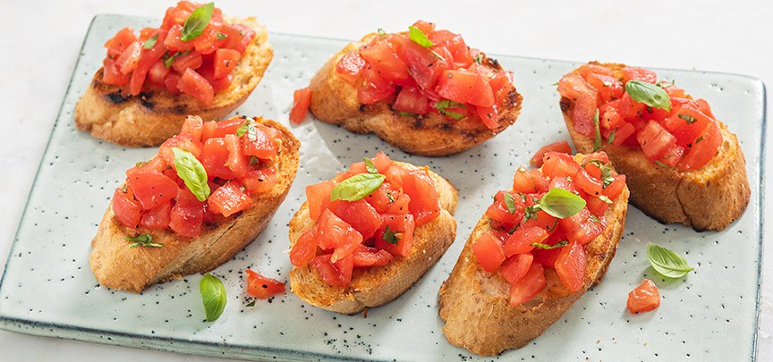

Hét recept voor klassieke bruschetta's met tomaten en basilicum op een krokant broodje.
Dit hapje valt bij iedereen in de smaak.
Ingrediënten
Voor 8 stuks
8 sneetjes stokbrood
4 tomaten (van goede kwaliteit)
1 teen knoflook
Handje verse basilicum
Peper en zout
Olijfolie
Bereidingswijze
Vul een kom met kokend heet water. Snijd met een mes een kruis aan de onderkant van de tomaten.
Leg de tomaten een minuutje in het water en spoel ze af moet koud water. Als het goed is moet nu het velletje makkelijk te verwijderen zijn.
Snijd ook het waterige gedeelte met de zaadjes er uit en snijd het vruchtvlees in kleine blokjes.
Doe de stukjes tomaat in een kom en voeg een klein beetje olijfolie toe.
Hak de basilicum fijn en schep door de tomaten. Breng het tomatenmengsel op smaak met een snufje peper en zout.
Snijd het brood in plakken en bestrijk aan beide kanten met een beetje olijfolie.
Grill het brood aan beide kanten in een grillpan (of oven) knapperig.
Wrijf met een teentje knoflook over de bovenkant van de knapperige broodjes.
Leg ze op een bord en schep de bruschetta topping er over. Garneer eventueel met een extra blaadje basilicum.

Tip Je kunt het bruschetta mengsel meteen gebruiken of afgedekt in de koelkast laten marineren (hele nacht kan ook) voor een intensere smaak.